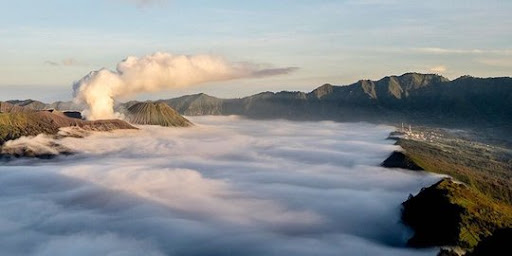
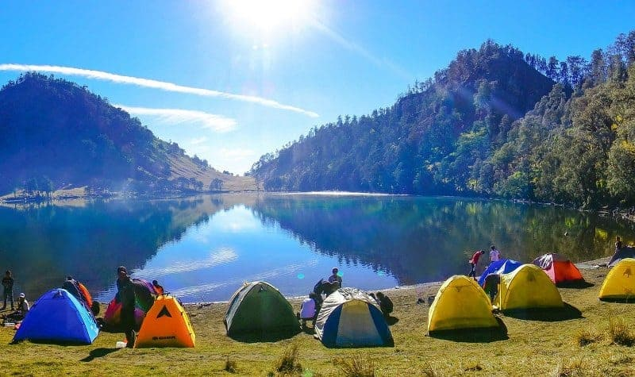

Destinasi
Destinasi Populer Lumajang
Rangkuman spot terbaik untuk jelajah alam, sunrise, hingga danau tenang di kaki Semeru.


Rangkuman spot terbaik untuk jelajah alam, sunrise, hingga danau tenang di kaki Semeru.

